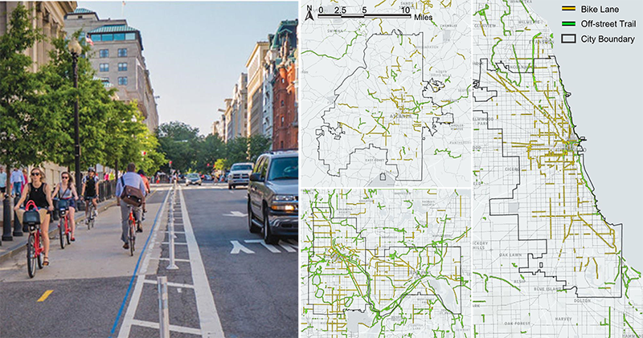
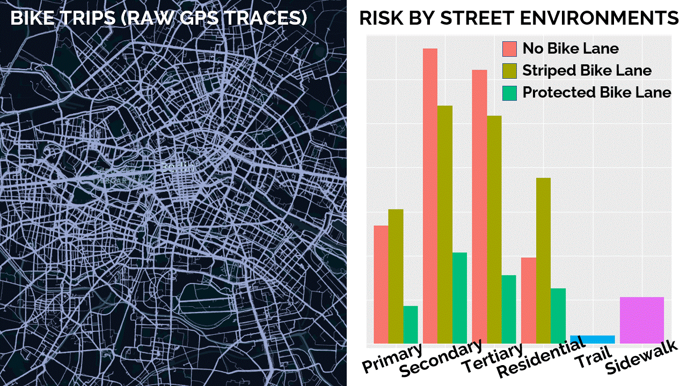
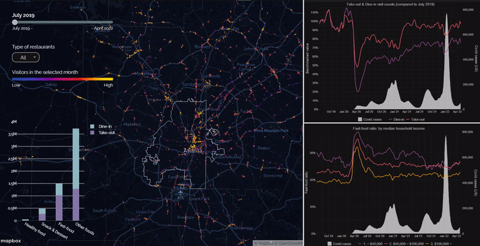
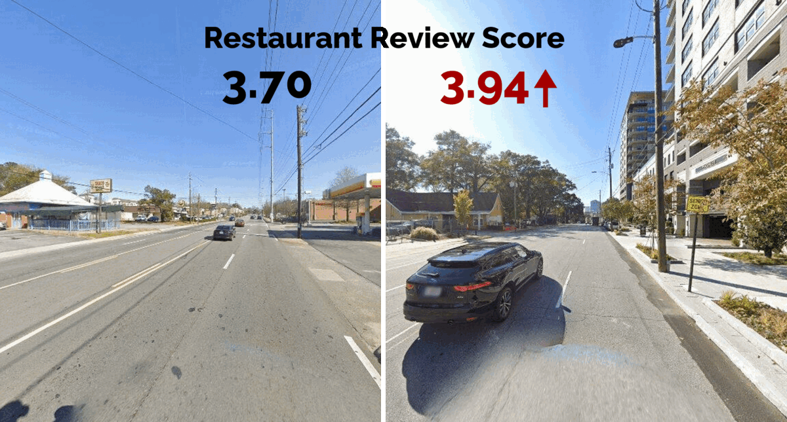
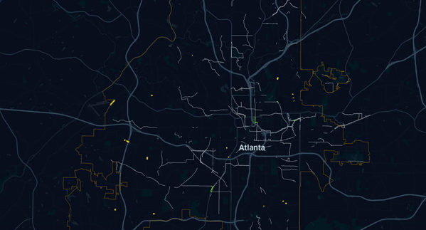
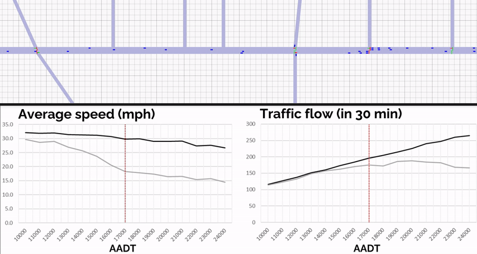
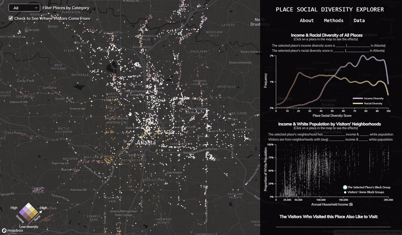
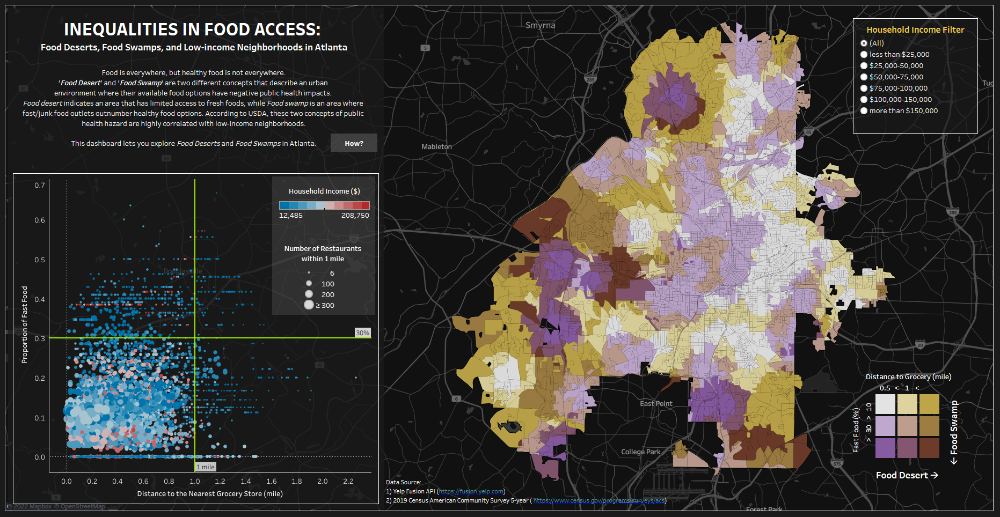

- this temporary site is just for practice, pilot.
- this temporary site is just for practice, pilot.
My interests center around — I study .
I also enjoy , see Research Highlights below.
Experience
-
Associate Researcher Fellow
Korea Research Institute for Human Settlements
June 2019 - present
-
Associate Researcher Fellow
Korea Research Institute for Human Settlements
June 2019 - present
-
Research Assistant
Colleage of Design, Construction, and Planning
University of Florida
Jan. 2021 - present
-
Project Consultant, Intern
Millennium Promise & Merry-Year International
Jul. 2011 - June 2012
Education
-
-
MS in Urban
Georgia Institute of Technology
Aug 2021- Aug 2023
-
n
cum laude, Unive
Mar 2010 - Aug 2017
Technical Skills
- Languages: Python | R | SQL | Java | HTML
- Libraries & frameworks:
- Web dev: React.js | Node.js | jQuery
- Visualization: Mapbox.js | Processing
- Machine learning: PyTorch | TensorFlow
- Network anlaysis: Gephi | UCINET | NetMiner
- Spatial Analysis Tools: ArcGIS | ArcGISPro | QGIS | S-Cube
- Other software: SPSS | JMP
Interests
- Climate change | Climate gentrification | LULC
- Geospatial analytics | Visualization | GIS
- Data science | Machine Learning | Computer vision
- Spatial Network analysis | Urban modeling and simulation

Mit.

On-ion models
(Xie et al., 2021;
Qiao et al., 2021),
a vanishing point detection model (Zhou et al., 2019),
and a vehicle re-identification model (He et al., 2020).

One ly.
Using Simra,
an app-based, crowdsourced dataset on bike routes and near-misses, this study examines the association between various street environments and the risk of near misses in Berlin, Germany.

On-dake the transit service more "equitable" across the city?

Eating behaviors are certainly one of the primary things that the pandemic has affected in negative ways. Using restaurant foot traffic data from SafeGraph, this study shows in what way our eating habits became unhealthier during the pandemic and how the changes differ by neighborhood characteristics.

Walkable streetscapes are conducive to the perceived safety and aesthetics of the street frontage. This study extends the concept of servicescapes to the surrounding street environment. The analysis shows that the quality of streetscapes (measured through a computer vision based method by Koo et al. (2022)) has positive effects on customer satisfaction (derived from Yelp reviews).

Complete streets aim to ensure safe travel for all street users regardless of their age, ability, or mode of transportation. Due to the inevitable piecemeal nature of those projects, however, complete streets are not very complete from a network standpoint. This study investigates the design of a complete street network by using bike lane networks as connective threads.

This study investigates the impact of a planned road diet on 10th Street NW on roadway performances.
A microscopic traffic simulation, building upon the work of
Treiber et al. (2000),
was conducted f
and traffic flow is projected to moderately decrease by 11% due to the reduced capacity.

Explore the social diversity among visitors at third places in the City of Atlanta. What types of places let you intermingle with people with diverse backgrounds? The visualization was created by Uijeong Hwang and Xiaofan Liang based on data shared by Seolha Lee.

Food is everywhere, but healthy food is not everywhere. Many neighborhoods in U.S. cities are surrounded by fast/junk food outlets and have limited access to fresh foods. This dashboard demonstrates which neighborhoods in the City of Atlanta are at risk of being public health hazards and how it is correlated with the neighborhoods' income.